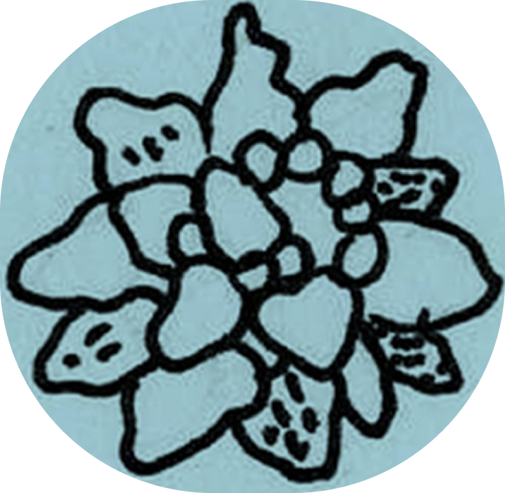
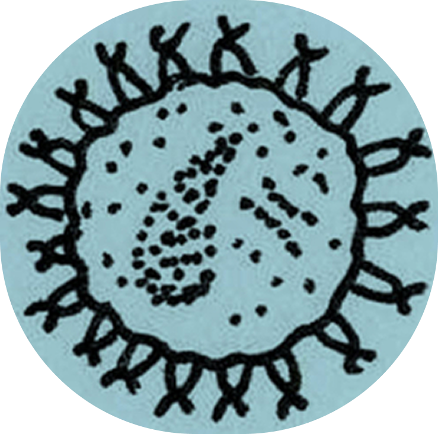
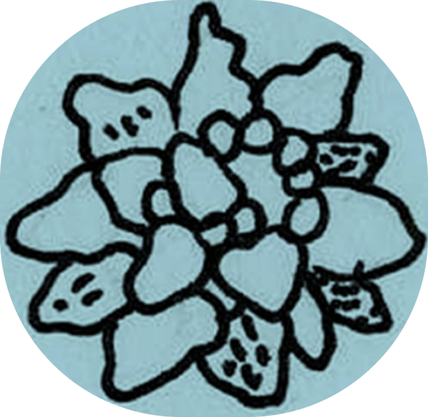
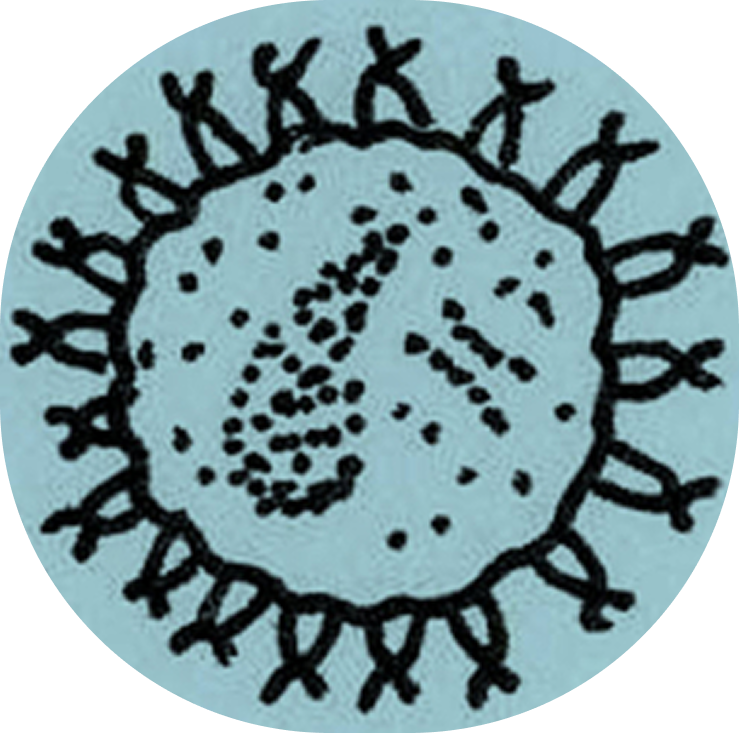
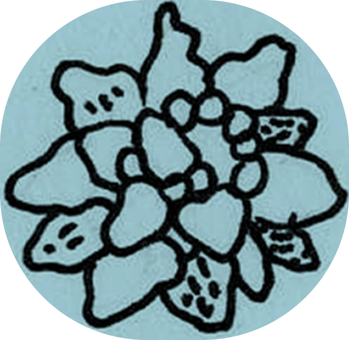
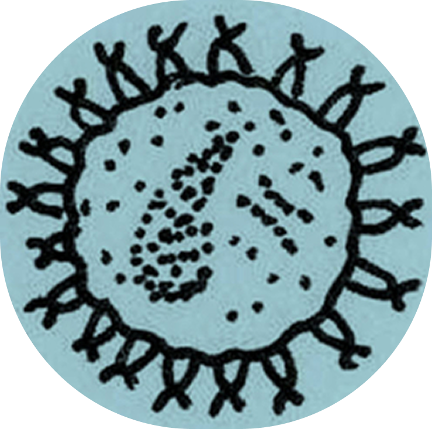
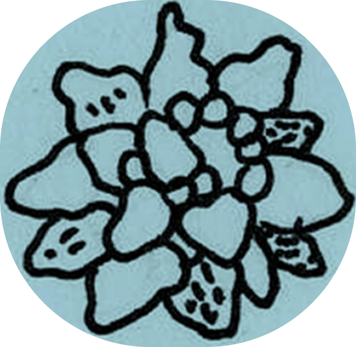
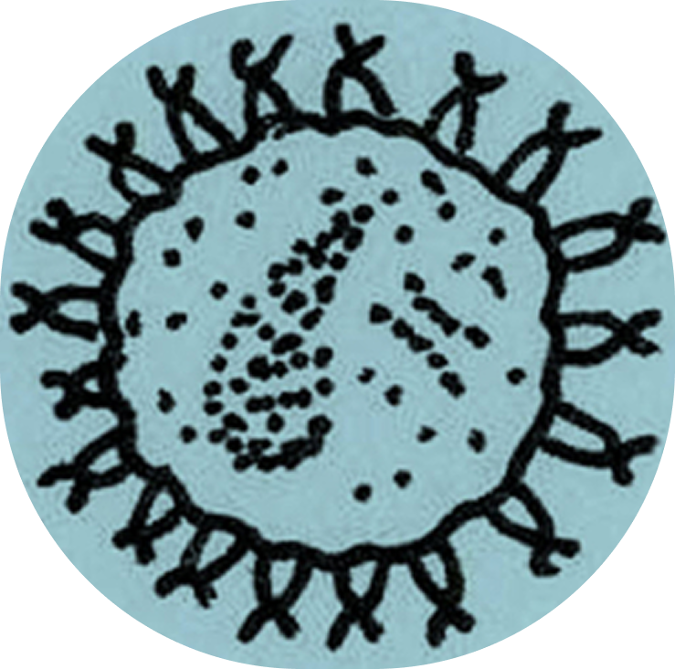

Дизайн
Ксения Здоровец
Анимация
Анна Комкова
«Tardigrada non sunt qui videntur» — «Тихоходки не те, кем кажутся». Восхищает, как это микроскопическое существо стало чемпионом по выживанию. Тихоходки невероятно странные: меня поразило, что они откладывают яйца в свою же шкурку после линьки. Практикуют «ресайклинг». Такие способности к выживанию объединяют их с другими странными ребятами — мхами и грибами.
Ксения Здоровец